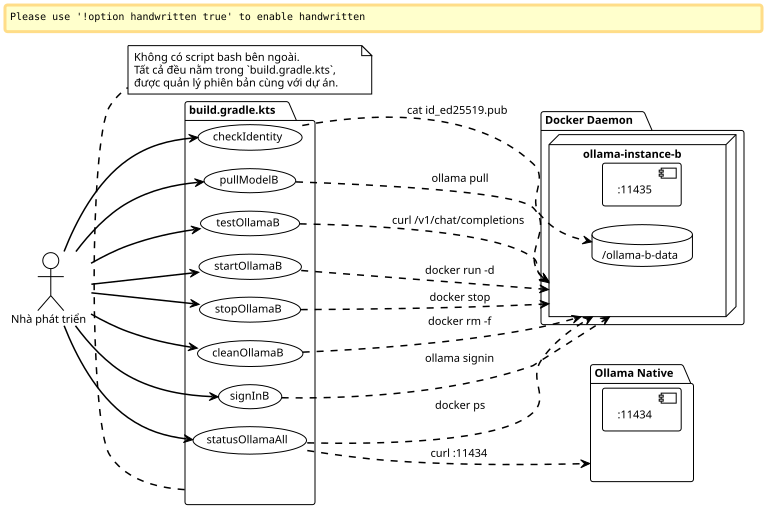
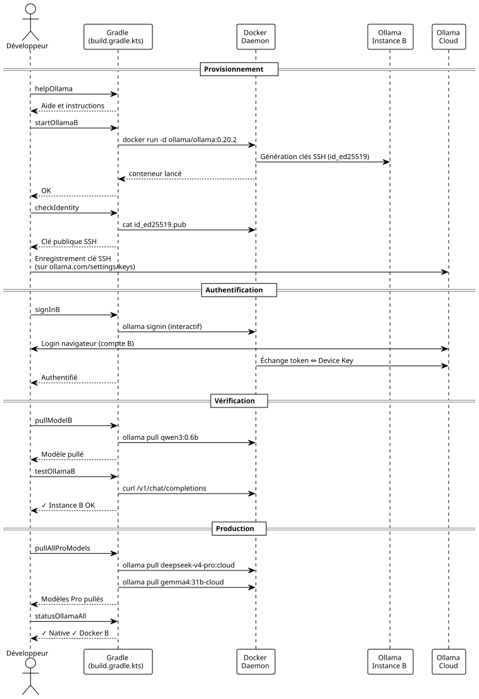

Plugin Gradle Nội bộ để Điều khiển Hai Instance Ollama Pro Song song
Đăng ngày 08 May 2026
Tại sao phải gõ các lệnh docker bằng tay khi chúng ta có thể đóng gói tất cả vào các tác vụ Gradle? Đây là cách tôi đã công nghiệp hóa cấu hình dual-Ollama Pro của mình mà không cần bất kỳ script shell bên ngoài nào. Khởi động, dừng, định danh, đăng nhập, pull — tất cả đều thông qua`./gradlew`Vì bạn chưa cung cấp văn bản cần dịch, vui lòng gửi nội dung tiếng Pháp mà bạn muốn chuyển sang tiếng Việt. Tôi sẽ tuân thủ nghiêm ngặt tất cả các yêu cầu về định dạng và giữ nguyên các đoạn mã trong dấu backtick.
Giới thiệu
Trong bài viết trước, tôi đã hướng dẫn cách để hai tài khoản Ollama Pro cùng tồn tại trên một máy bằng cách cô lập instance thứ hai trong một container Docker. Cách thiết lập này hoạt động, nhưng việc quản lý hàng ngày nhanh chóng trở nên phiền phức: phải nhớ tên container, chạy lại các câu lệnh chính xác`docker exec`, kiểm tra cổng nào đang hoạt động…
Bạn biết cái cảm giác khi bạn mở 14 terminal và bạn đang gõ`docker exec ollama-instance-b ollama list`lần thứ tư, và bạn tự nhủ rằng "chắc chắn phải có một cách sạch sẽ hơn" ?
Phương tiện đó chính là Gradle.
Không chỉ để build mã nguồn. Gradle đóng vai trò như một nhạc trưởng cho hạ tầng cục bộ. Các tác vụ thực hiện cấp phát, kiểm tra, thử nghiệm và dọn dẹp. Tất cả được quản lý phiên bản trong một`build.gradle.kts`người sống cạnh bên`docker-compose.yml`Vui lòng cung cấp văn bản cần dịch.

Tại sao sử dụng Gradle cho Infra?
Câu hỏi này là chính đáng. Gradle là một build tool. Thông thường, nó thực hiện biên dịch, kiểm thử, đóng gói. Chứ không phải là chạy các container Docker.
Ngoại trừ việc Gradle cũng là một công cụ quản lý đồ thị phụ thuộc — và đó là lúc mọi thứ trở nên thú vị cho trường hợp của chúng ta.
Chúng ta muốn:
-
Để container được khởi chạy trước khi đăng nhập
-
Hãy xác minh danh tính trước khi pull mô hình
-
Việc một bài kiểm tra API thất bại trong im lặng nếu container bị down
Từ đồ thị phụ thuộc thuần túy. Gradle được thiết kế cho điều đó. DSL Kotlin giúp việc viết các tác vụ trở nên mượt mà, và cái`doLast`cho phép thực thi các lệnh hệ thống như thể đó là mã ứng dụng.
Và quan trọng nhất là: không cần duy trì bashrc, không có các script nằm rải rác trong`~/bin`, không có Makefile bên cạnh docker-compose. Tất cả đều nằm trong một tệp duy nhất, cùng vị trí với mã nguồn của dự án.
File build.gradle.kts đầy đủ
Đây là tệp mà cuối cùng tôi đã viết xong. Nó thực hiện mọi thứ, từ việc cấp phát volume cho đến curl kiểm tra, bao gồm cả đăng nhập tương tác.
import java.io.ByteArrayOutputStream
plugins {
base
}
// -------------------------------------------------------------------------
// Configuration
// -------------------------------------------------------------------------
val instanceName = "ollama-instance-b"
val instancePort = 11435
val instanceImage = "ollama/ollama:0.20.2"
val dataDir = file("${System.getProperty("user.home")}/ollama-b-data")
val nativePort = 11434
// Modèles à gérer — cloud Pro + un modèle local gratuit pour les tests
val proModels = listOf("deepseek-v4-pro:cloud", "gemma4:31b-cloud")
val freeModels = listOf("qwen3:0.6b")
// -------------------------------------------------------------------------
// Tâche préparatoire — création du volume si absent
// -------------------------------------------------------------------------
val prepareVolume by tasks.registering {
group = "ollama"
description = "Crée le répertoire de volume pour l'instance B si absent"
doLast {
if (!dataDir.exists()) {
dataDir.mkdirs()
println("Volume créé : ${dataDir.absolutePath}")
} else {
println("Volume existant : ${dataDir.absolutePath}")
}
}
}
// -------------------------------------------------------------------------
// Démarrage du conteneur Docker
// -------------------------------------------------------------------------
val startOllamaB by tasks.registering(Exec::class) {
group = "ollama"
description = "Lance le conteneur Docker pour l'instance Ollama B"
dependsOn(prepareVolume)
commandLine(
"docker", "run", "-d",
"--name", instanceName,
"-p", "$instancePort:11434",
"-v", "${dataDir.absolutePath}:/root/.ollama",
"-e", "OLLAMA_HOST=0.0.0.0",
"--restart", "always",
instanceImage
)
isIgnoreExitValue = true
doLast {
val alreadyRunning = executionResult.get().exitValue != 0
if (alreadyRunning) {
logger.lifecycle("Le conteneur '$instanceName' existe déjà — tentative de démarrage")
} else {
logger.lifecycle("Conteneur '$instanceName' lancé")
}
}
}
// -------------------------------------------------------------------------
// Arrêt du conteneur
// -------------------------------------------------------------------------
val stopOllamaB by tasks.registering(Exec::class) {
group = "ollama"
description = "Arrête le conteneur Docker de l'instance B"
commandLine("docker", "stop", instanceName)
isIgnoreExitValue = true
doLast {
logger.lifecycle("Conteneur '$instanceName' arrêté")
}
}
// -------------------------------------------------------------------------
// Affichage de la clé publique (Device Key)
// -------------------------------------------------------------------------
val checkIdentity by tasks.registering(Exec::class) {
group = "ollama"
description = "Affiche la clé publique SSH de l'instance B"
dependsOn(startOllamaB)
commandLine("docker", "exec", instanceName, "cat", "/root/.ollama/id_ed25519.pub")
standardOutput = ByteArrayOutputStream()
doLast {
val pubKey = standardOutput.toString().trim()
println("=".repeat(60))
println("Device Key (Instance B)")
println("=".repeat(60))
println(pubKey)
println("=".repeat(60))
println("→ Enregistre cette clé sur https://ollama.com/settings/keys")
println("→ Puis exécute : ./gradlew signInB")
println("=".repeat(60))
}
}
// -------------------------------------------------------------------------
// Sign-in interactif (Ouvrira le navigateur)
// -------------------------------------------------------------------------
val signInB by tasks.registering(Exec::class) {
group = "ollama"
description = "Lance l'authentification interactive Ollama pour le compte B"
dependsOn(startOllamaB)
standardInput = System.`in`
standardOutput = System.out
errorOutput = System.err
commandLine("docker", "exec", "-it", instanceName, "ollama", "signin")
doFirst {
logger.lifecycle("Authentification pour le Compte Pro B...")
logger.lifecycle("Ouvre ton navigateur et connecte-toi avec l'email du compte B")
}
}
// -------------------------------------------------------------------------
// Pull d'un modèle (paramétrable via propriété Gradle)
// -------------------------------------------------------------------------
val pullModelB by tasks.registering(Exec::class) {
group = "ollama"
description = "Pull un modèle sur l'instance B. Usage : ./gradlew pullModelB -Pmodel=nom:tag"
dependsOn(startOllamaB)
val modelName = project.findProperty("model") as? String ?: "qwen3:0.6b"
commandLine("docker", "exec", instanceName, "ollama", "pull", modelName)
doFirst {
logger.lifecycle("Pull du modèle '$modelName' sur l'instance B...")
}
doLast {
logger.lifecycle("Modèle '$modelName' pullé avec succès")
}
}
// -------------------------------------------------------------------------
// Pull de tous les modèles Pro (batch)
// -------------------------------------------------------------------------
val pullAllProModels by tasks.registering {
group = "ollama"
description = "Pull tous les modèles cloud Pro sur l'instance B"
dependsOn(startOllamaB)
doLast {
proModels.forEach { model ->
logger.lifecycle("→ Pull $model...")
val process = ProcessBuilder("docker", "exec", instanceName, "ollama", "pull", model)
.inheritIO()
.start()
process.waitFor()
}
logger.lifecycle("Tous les modèles Pro pullés")
}
}
// -------------------------------------------------------------------------
// Pull de tous les modèles gratuits (batch / première install)
// -------------------------------------------------------------------------
val pullAllFreeModels by tasks.registering {
group = "ollama"
description = "Pull tous les modèles locaux gratuits sur l'instance B"
dependsOn(startOllamaB)
doLast {
freeModels.forEach { model ->
logger.lifecycle("→ Pull $model...")
val process = ProcessBuilder("docker", "exec", instanceName, "ollama", "pull", model)
.inheritIO()
.start()
process.waitFor()
}
logger.lifecycle("Tous les modèles gratuits pullés")
}
}
// -------------------------------------------------------------------------
// Liste des modèles disponibles sur l'instance B
// -------------------------------------------------------------------------
val listModelsB by tasks.registering(Exec::class) {
group = "ollama"
description = "Liste les modèles disponibles sur l'instance B"
dependsOn(startOllamaB)
commandLine("docker", "exec", instanceName, "ollama", "list")
}
// -------------------------------------------------------------------------
// Health check — test API sur les deux instances
// -------------------------------------------------------------------------
val testOllamaB by tasks.registering {
group = "ollama"
description = "Teste la connectivité API de l'instance B avec un simple chat"
dependsOn(startOllamaB)
doLast {
val model = project.findProperty("model") as? String ?: "qwen3:0.6b"
logger.lifecycle("Test de l'instance B avec le modèle '$model'...")
val payload = """
{
"model": "$model",
"messages": [{"role": "user", "content": "Réponds uniquement par OK"}],
"max_tokens": 5
}
""".trimIndent()
val process = ProcessBuilder(
"curl", "-s", "http://localhost:$instancePort/v1/chat/completions",
"-H", "Content-Type: application/json",
"-d", payload
).start()
val response = process.inputStream.bufferedReader().readText()
process.waitFor()
if (response.contains("\"id\":\"chatcmpl") || response.contains("\"choices\"")) {
println("✓ Instance B OK — port $instancePort répond")
println(" Response: ${response.take(120)}...")
} else {
println("✗ Instance B INACTIVE — vérifie le conteneur avec './gradlew statusOllamaAll'")
println(" Raw: $response")
}
}
}
// -------------------------------------------------------------------------
// Health check sur les deux instances simultanément
// -------------------------------------------------------------------------
val statusOllamaAll by tasks.registering {
group = "ollama"
description = "Vérifie le statut des deux instances Ollama (native + Docker)"
doLast {
// Instance native
runCatching {
val process = ProcessBuilder(
"curl", "-s", "-o", "/dev/null", "-w", "%{http_code}",
"http://localhost:$nativePort/api/tags"
).start()
val code = process.inputStream.bufferedReader().readText().trim()
process.waitFor()
println(if (code == "200") "✓ Instance Native — port $nativePort OK (HTTP $code)"
else "✗ Instance Native — port $nativePort (HTTP $code)")
}.getOrElse {
println("✗ Instance Native — injoignable sur le port $nativePort")
}
// Instance Docker
runCatching {
val process = ProcessBuilder(
"curl", "-s", "-o", "/dev/null", "-w", "%{http_code}",
"http://localhost:$instancePort/api/tags"
).start()
val code = process.inputStream.bufferedReader().readText().trim()
process.waitFor()
println(if (code == "200") "✓ Instance Docker B — port $instancePort OK (HTTP $code)"
else "✗ Instance Docker B — port $instancePort (HTTP $code)")
}.getOrElse {
println("✗ Instance Docker B — injoignable sur le port $instancePort")
}
// Info conteneur
runCatching {
val process = ProcessBuilder("docker", "ps", "--filter", "name=$instanceName",
"--format", "table {{.Names}}\\t{{.Status}}\\t{{.Ports}}").start()
val status = process.inputStream.bufferedReader().readText()
process.waitFor()
println()
println("Conteneur Docker :")
println(status)
}
}
}
// -------------------------------------------------------------------------
// Nettoyage complet
// -------------------------------------------------------------------------
val cleanOllamaB by tasks.registering(Exec::class) {
group = "ollama"
description = "Arrête et supprime le conteneur Docker de l'instance B"
dependsOn(stopOllamaB)
commandLine("docker", "rm", instanceName)
isIgnoreExitValue = true
doLast {
logger.lifecycle("Conteneur '$instanceName' supprimé")
logger.lifecycle("Le volume ${dataDir.absolutePath} est conservé (identité persistante)")
}
}
// -------------------------------------------------------------------------
// Affichage des instructions
// -------------------------------------------------------------------------
val helpOllama by tasks.registering {
group = "ollama"
description = "Affiche l'aide des tâches Ollama disponibles"
doLast {
println("""
╔══════════════════════════════════════════════════════════════╗
║ Tâches Gradle — Pilotage Dual Ollama Pro ║
╠══════════════════════════════════════════════════════════════╣
║ ./gradlew startOllamaB Démarrer l'instance Docker B ║
║ ./gradlew stopOllamaB Arrêter l'instance Docker B ║
║ ./gradlew checkIdentity Afficher la clé SSH publique ║
║ ./gradlew signInB Sign-in interactif compte B ║
║ ./gradlew pullModelB Pull un modèle (-Pmodel=...) ║
║ ./gradlew pullAllProModels Pull tous les modèles Pro ║
║ ./gradlew pullAllFreeModels Pull tous les modèles gratuits ║
║ ./gradlew listModelsB Lister les modèles instance B ║
║ ./gradlew testOllamaB Test API avec un chat simple ║
║ ./gradlew statusOllamaAll Santé des 2 instances ║
║ ./gradlew cleanOllamaB Supprimer le conteneur ║
║ ./gradlew helpOllama Cette aide ║
╚══════════════════════════════════════════════════════════════╝
""".trimIndent())
}
}Xong. Mười hai nhiệm vụ, một điểm nhập duy nhất và không có chút trở ngại nào.
Giải phẫu các Nhiệm vụ Chính
startOllamaB` — Trình khởi chạy
Không có gì phức tạp: một`docker run -d`với các tham số chính xác. Bí quyết nằm ở`isIgnoreExitValue = true`Vui lòng cung cấp nội dung cần dịch.
isIgnoreExitValue = trueNếu container đã tồn tại, lệnh`docker run`thất bại (exit code ≠ 0). Nếu không có thuộc tính này, Gradle sẽ dừng toàn bộ quá trình build với lỗi. Ở đây, sự thất bại diễn ra trong im lặng — và cái`doLast`phát hiện xem đó là một trường hợp "đã tồn tại" hay là một lỗi thực sự.
Le `doLast`là rất quan trọng: nó chạy sau khi lệnh được thực thi, điều này cho phép kiểm tra`executionResult.get().exitValue`và ghi nhật ký một thông báo phù hợp.
signInB` — Tương tác
Đây là tác vụ duy nhất yêu cầu sự tương tác của con người. Gradle chuyển tiếp`System.in`vào quy trình để prompt`ollama signin`có thể hiển thị bình thường :
standardInput = System.`in`
standardOutput = System.out
errorOutput = System.errNếu không có điều này, quá trình sign-in sẽ bị chặn vì stdin bị đóng và bạn sẽ không bao giờ nhìn thấy prompt.
pullModelB` — Bản Có Thể Thiết Lập
Một tác vụ chung chấp nhận một tham số thông qua`-P`Please provide the text you would like me to translate.
./gradlew pullModelB -Pmodel=deepseek-v4-pro:cloud
./gradlew pullModelB # fallback : qwen3:0.6bFallback là quan trọng:`project.findProperty("model") as? String ?: "qwen3:0.6b"`đảm bảo rằng tác vụ không bị lỗi nếu chúng ta quên tham số.
statusOllamaAll` — Chẩn đoán
Hai`curl`về sức khỏe tại các cảng`11434` et 11435, với fallback là en`runCatching`để không bị treo nếu một trong các instance bị down. Kết quả đầu ra được cấu trúc như sau:
✓ Instance Native — port 11434 OK (HTTP 200)
✓ Instance Docker B — port 11435 OK (HTTP 200)
Conteneur Docker :
NAMES STATUS PORTS
ollama-instance-b Up 3 hours 0.0.0.0:11435->11434/tcpChỉ cần liếc nhìn, bạn sẽ biết chính xác cái gì đang chạy và cái gì đang trục trặc.
cleanOllamaB` — Sự Làm Sạch Bảo Tồn Danh Tính
commandLine("docker", "rm", instanceName)
isIgnoreExitValue = trueContainer bị xóa, nhưng volume`~/ollama-b-data`làđược bảo tồn. Danh tính SSH vẫn tồn tại sau khi dọn dẹp. Vào lần tới`startOllamaB`, các khóa tương tự sẽ được tái sử dụng — không cần thực hiện lại sign-in cũng như không cần đăng ký lại Device Key.
|
|
Quy trình Hoàn tất — Từ Không đến Hai Phiên
Đây là trình tự lý tưởng cho một người mới tham gia dự án và muốn thiết lập mọi thứ mà không cần mở tài liệu hướng dẫn:
# 1. Premier contact — que faire ?
$ ./gradlew helpOllama
# 2. On démarre l'instance B
$ ./gradlew startOllamaB
# 3. On récupère la Device Key et on l'enregistre sur ollama.com
$ ./gradlew checkIdentity
# → copier-coller de la clé sur https://ollama.com/settings/keys
# 4. Authentification interactive
$ ./gradlew signInB
# 5. Pull d'un petit modèle gratuit pour tester la plomberie
$ ./gradlew pullModelB
# 6. Test API
$ ./gradlew testOllamaB
# 7. Si tout est vert, pull des modèles Pro
$ ./gradlew pullAllProModels
# 8. Vérification finale des deux instances
$ ./gradlew statusOllamaAllÍt hơn hai phút, mọi thứ đã được khởi tạo. Không cần đọc README, không cần thiết lập các biến môi trường. Nhiệm vụ`helpOllama`đóng vai trò là tài liệu tích hợp.

Tại sao không tạo nó thành một Gradle Plugin thực thụ?
Câu hỏi chính đáng. Trích xuất cái này`build.gradle.kts`trong một plugin Gradle độc lập sẽ có những lợi thế: tái sử dụng giữa các dự án, cấu hình khai báo, mở rộng DSL.
Nhưng hiện tại, điều đó không có ý nghĩa. Build này không có logic nghiệp vụ phức tạp — nó chỉ là một wrapper bao quanh các lệnh Docker và curl. Việc tạo thêm một lớp phủ plugin Gradle đầy đủ (với extension, unit test, publication) sẽ là quá mức đối với 12 tác vụ tiện ích.
Le `build.gradle.kts`nằm nội bộ trong dự án cần đến nó. Việc sao chép nó sang nơi khác là rất đơn giản. Nếu một ngày nào đó tôi có ba dự án phụ thuộc vào nó, tôi sẽ chuyển nó thành một plugin. Hiện tại, cứ KISS.
|
Ngày mà bạn có ba`build.gradle.kts`giống nhau trong ba dự án, đó là tín hiệu cho thấy cần phải trích xuất ra một plugin. Trước đó, việc trùng lặp sẽ ít tốn kém hơn là sự trừu tượng hóa. Triết lý của dev. |
Bài học kinh nghiệm
-
Gradle không chỉ là một build tool— Công cụ đồ thị phụ thuộc biến nó thành một bộ điều phối hạ tầng đáng gờm.
doLast,isIgnoreExitValue,dependsOn: ba nguyên mẫu này là đủ để điều khiển một container Docker với độ tin cậy tương đương với một pipeline CI. -
isIgnoreExitValue` là bạn của bạn— Trong một thế giới lý tưởng,`docker run`trên một container đã tồn tại sẽ trả về một cảnh báo thay vì một mã thoát lỗi. Trong thế giới thực, bạn đặt`isIgnoreExitValue = true`và bạn quản lý việc chẩn đoán trong`doLast`Vui lòng cung cấp văn bản cần dịch.
-
Các tác vụ có thể tùy chỉnh loại bỏ sự mơ hồ — Un
pullModelB`chung với-Pmodel=…`thay thế N tác vụ chuyên biệt. Một tác vụ duy nhất, một tài liệu duy nhất, một hành vi duy nhất. -
runCatching` cho các health check— Khi bạn kiểm tra N endpoint, việc crash của endpoint đầu tiên không được ngăn cản việc kiểm tra các endpoint còn lại.
runCatching+`getOrElse`theo từng endpoint, và việc chẩn đoán vẫn đầy đủ ngay cả trong trường hợp xảy ra sự cố một phần. -
Tác vụ
helpOllamanhư một tài liệu hướng dẫn có thể thực thi — Un `println()`được định dạng tốt sẽ thay thế cho một README dài ba đoạn văn. Nó tự cung cấp tài liệu, luôn được cập nhật và có thể truy cập mà không cần rời khỏi terminal.
Kết luận
Chúng ta đã chuyển từ việc nhập các lệnh docker bằng tay sang một quy trình Gradle hoàn chỉnh, có quản lý phiên bản và có thể tái sử dụng. Mười hai tác vụ bao quát toàn bộ vòng đời: cấp phát, định danh, đăng nhập, pull, kiểm thử, chẩn đoán và dọn dẹp.
Sự kết hợp giữa docker-compose + build.gradle.kts + opencode.json tạo nên một bộ ba hoàn hảo: Docker để cô lập, Gradle để điều phối và OpenCode để tiêu thụ. Mỗi lớp có trách nhiệm riêng và không lớp nào xâm phạm vào lớp kia.
Bước tiếp theo? Tự động hóa vòng đời trong CI để các instance Ollama có sẵn trong các môi trường dev tạm thời. Nhưng đó là câu chuyện của một bài viết khác.
Tài nguyên
Bài viết được đăng ngày 2026-05-08